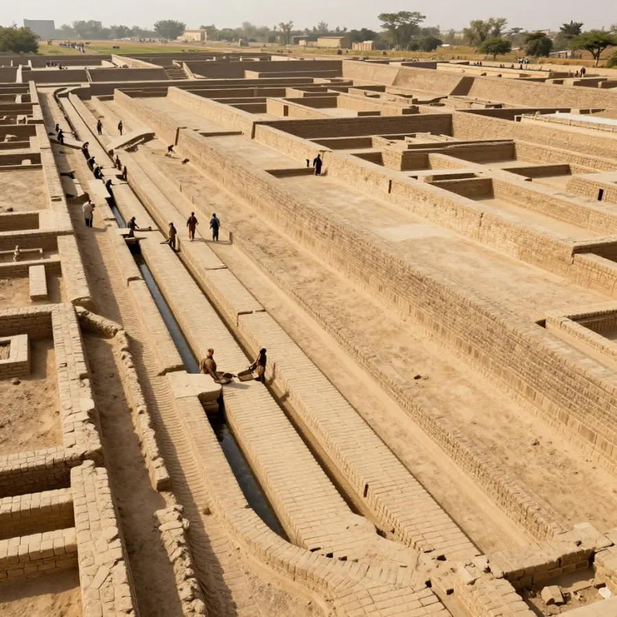

Indus Valley Civilization: Cities Before Their Time!

Mohenjo-daro - a city with running water and flush toilets, built over 4,000 years ago!
Imagine a city with running water, flush toilets, and grid-planned streets. Sounds modern, right? But this city was built over 4,500 years ago - at the same time as ancient Egypt!
This was the Indus Valley Civilization - one of the world's first great civilizations. They built incredible cities, traded with distant lands, and created a writing system we still can't read today.
Overview
Cities Ahead of Their Time
The Indus Valley people built some of the most advanced cities of the ancient world. Their two largest cities were Harappa and Mohenjo-daro (in modern-day Pakistan). Each had around 40,000 people - huge for that time!
What made their cities so special?
- 📐 Grid street layouts - streets crossed at right angles like modern cities
- 💧 Running water - pipes brought water into every house
- 🚽 Flush toilets - yes, really! They had indoor plumbing
- 🕳️ Covered sewers - underground drains carried away waste

Their covered drainage system was more advanced than many European cities had 4,000 years later!
References & Further Reading
Editorial note: We cross-check claims across multiple independent sources. See our Editorial Policy.